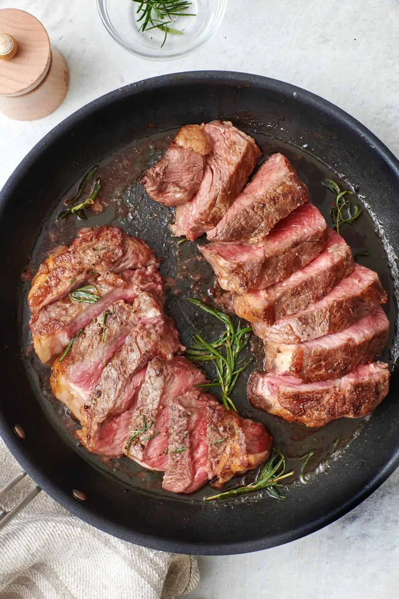

Pan Seared Steak
Home

Seared steak was brought into the spotlight due to its simplicity, reliability and quality.
This method of cooking was introduced in many Western European countries and does not
have a single country of origin.
Pan seared steak was popularized by Alton Brown
on his tv show Good Eats.
List of Ingredients
- Two 6 ounce beef top sirloin steaks
- Two cups of orange juice
- One cup of apple cider vinegar
- 1/2 of Worcestershire sauce
- One and 1/2 tablespoons of steak seasoning
- Freshly ground pepper to taste
- Two of teaspoons olive oil
- Sea salt to taste
Steps for Cooking
- Gather all ingredients
- Place steaks side by side in large casserole dish.
Add orange juice, cider vinegar, and Worcestershire sauce.
- Marinate, uncovered, in the refrigerator for 45 minutes.
- Preheat oven to 425 degree and remove dish from refrigerator
- Cover steaks with plastic wrap and let allow to come to room temperature, at least 15 minutes
- Place steaks on a clean work surface and generously rub with steak seasoning and black pepper.
- Heat olive oil in a cast-iron skillet over high heat.
- Cook steaks in the hot skillet until lightly browned on the bottom, 2 1/2 minutes.
- Flip and cook until browned on the other side and red in the center, about 2 minutes more.
- Transfer skillet with the steaks to the oven
- Bake in the preheated oven until steaks are firm and reddish-pink to lightly pink in the center, 8 to 10 minutes.
Tip: An instant-read thermometer inserted into the center should read from 130 degrees F (54 degrees C) to 140 degrees F (60 degrees C).
- Remove steaks from oven; season with salt. Let rest for 5 minutes before serving.
- Enjoy!